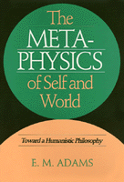

<body bgcolor="#FFFFFF" text="#000000" link="#0000FF" vlink="#CC0000" alink="#CC0000"><center><hr width="350" size="1" align="center" noshade>A full-fledged humanistic solution to the modern human identity crisis occasioned by the way we must think in living our lives and the way we have become accustomed to think in our search for knowledge and understanding of the world<hr width="350" size="1" align="center" noshade><p><a href="https://cdcshoppingcart.uchicago.edu/Cart/ChicagoBook.aspx?ISBN=9780877227847&&PRESS=temple" target="_top">Buy this book!</a> | <a href="https://cdcshoppingcart.uchicago.edu/Cart/Cart.aspx?PRESS=temple" target="_top">View Cart</a> | <a href="https://cdcshoppingcart.uchicago.edu/Cart/Cart.aspx?PRESS=temple" target="_top">Check Out</a></p><p></p></center><!--none//--><h1>The Metaphysics of Self and World</h1>
<H2>Toward a Humanistic Philosophy</H2>
<h3>E. M. Adams</h3>
<P>cloth 0-87722-784-5 $72.50, May 91, <FONT COLOR=#990033>Out of Stock Unavailable</FONT>
<BR> 325 pp
6x9
</P><BLOCKQUOTE><I>"Just possibly a landmark book. Adams writes very well and his illustrations are very good. He also displays great erudition."</I>
<BR>&#151<B>Richard Taylor</B>, University of Rochester<I></I></BLOCKQUOTE>
<p>A great fissure occurred in Western civilization in the early modern period with the divorce between the humanities and the sciences and the rise of scientific naturalism. <I>The Metaphysics of Self and World</I> is a philosophical exploration of the relationship between the individual, the culture, and the world. It is, in the author’s words, "a philosophy of the humanities, a philosophy of humanity, and a philosophy of social reality." It explores the implications of a world-view that would integrate the perspective of the sciences with humanistic ways of thought.
<p>E.M. Adams claims that we do violence to ourselves as human beings by trying to fit into the world as delineated in scientific categories. Rejecting cultural subjectivism and scientific naturalism, he argues for the irreducibility and validity of the categories of the humanities and for a fully developed humanistic philosophy of self and world. In generating this world-view, he utilizes the humanities as a source of culture therapy in order to close the fissure in Western civilization.
<BR>&nbsp;<h2>Reviews</h2>
<P><I>"A very impressive, well-written, and philosophically sound work. With this volume, Adams rounds out a </I>major<I> contribution to contemporary philosohy and cultural criticism."</I>
<BR>&#151<B>Douglas Browning</B>, University of Texas at Austin
<P><I>"E. M. Adams is one of America's most distinguished philosophers. </I>The Metaphysics of Self and World<I> is a masterpiece in philosophy, original and persuasive, profound and clear, tightly argued yet dealing with major philosophical and cultural issues, reaching the heights of speculative theory while also affording wise and compassionate insight into urgent practical problems. All those who take philosophy seriously, as well as all those concerned about the present plight of the humanities and the predicament of mankind in the midst of science and technology, will learn immeasurable from reading it."</I>
<BR>&#151<B>Andrew J. Reck</B>, Tulane University
<BR>&nbsp;<h2>Contents</h2><P>
<p>Preface
<p>1. Self and World: The Problem
<p>2. The Humanities and Cultural Criticism
<br><I>The Humanities &#149
The Social Character of a Culture &#149
The Structure of Feeling of a Culture &#149
Philosophy and the Cultural Mind &#149
Philosophical Skepticism &#149
Categorial Analysis &#149
Categorial Analysis Illustrated &#149
The Importance of Epistemology &#149
How Metaphysics is Possible &#149
Conclusion</I>
<p>3. Meaning and Subjectivity
<br><I>A Realistic Theory of Meaning and Subjectivity &#149
Representationalism: The Naturalistic Challenge &#149
The Classical Empiricist Theory of Representations &#149
The Modern Functionalist Theory of Representations &#149
Criticism of Modern Functionalism &#149
Functional Theory of Sense Experience &#149
Functional Theory of Propositional Attitudes &#149
Functional Language &#149
The Irreducibility of the Language of Meaning &#149
Conclusion</I>
<p>4. Knowledge and Objectivity
<br><I>Behavioral Knowledge &#149
Rational Knowledge &#149
A Naturalistic Theory of Rational Knowledge &#149
A Humanistic Theory of Rational Knowledge &#149
Behavioral and Rational Knowledge Contrasted Objectivity &#149
Levels of Subjective and Objective Appraisals &#149
The Objectivity of Secondary Qualities &#149
The Spread of Subjectivism &#149
Conclusion</I>
<p>5. Semantic and Epistemic Powers of the Human Mind
<br><I>Grounds of the Culture &#149
Epistemic Encounters &#149
Modes of Epistemic Encounters &#149
Somatic Sensations &#149
Sensory Experience &#149
Affective and Conative Experience &#149
Self-Awareness &#149
Memory &#149
Reflective Awareness and Rational Intuition &#149
Perceptual Understanding &#149
Conclusion</I>
<p>6. The Subjective and Normative Structure of Selfhood
<br><I>Persons &#149
Human Beings &#149
Logic and Selfhood &#149
The Nature of Logic &#149
Logic and the Mental &#149
Logic and the Ethics of Thought &#149
Rationality and the Unconscious &#149
Ethics and Selfhood &#149
The Form of a Moral Life &#149
The Goal of a Moral Life &#149
Principles of Life Criticism &#149
Conclusion</I>
<p>7. Persons and the Normative Structure of Society
<br><I>The Individual and Society &#149
The Normative Structure of Society &#149
Social Organization &#149
Cultural Institutions &#149
Economic Institutions &#149
Political Institutions &#149
Conclusion</I>
<p>8. Toward a Humanistic World-View
<br><I>Summing Up &#149
A Humanistic World-View &#149
Religion, Theology, and Ultimate Reality</I>
<p>Notes
<br>Index
</P><BR>&nbsp;<H2>About the Author(s)</H2>
<table><tr><td valign="top"><img src="/tempress/authors/794_au.gif" height="90" width="75"></td><td width="100%" valign="middle"><p><B>E. M. Adams</B></A> is Kenan Professor of Philosophy, Emeritus, at the University of North Carolina, Chapel Hill. He has written numerous books and articles, and a festschrift celebrating his work, <I>Mind, Value, and Culture: Essays in Honor of E. M. Adams</I> (edited by David Weissbord), was published in 1989. He is also the author of <I><A HREF="1008_reg.html" TARGET="_top">Religion and Cultural Freedom</A></I>.</P></td></tr></table>
<BR><H2>Subject Categories</H2>
<p><A HREF="/tempress/philosophy.html" TARGET="_top">Philosophy and Ethics</a>
</p>
<p align="center"><a href="https://cdcshoppingcart.uchicago.edu/Cart/ChicagoBook.aspx?ISBN=9780877227847&&PRESS=temple" target="_top">Buy this book!</a> | <a href="https://cdcshoppingcart.uchicago.edu/Cart/Cart.aspx?PRESS=temple" target="_top">View Cart</a> | <a href="https://cdcshoppingcart.uchicago.edu/Cart/Cart.aspx?PRESS=temple" target="_top">Check Out</a></p><p><font face="Arial" size="1"><a href="copyright.html" onMouseOver="window.status='Web Copyright Policy';return true;" onMouseOut="window.status=''" title="Web Copyright Policy">&copy;</a> 2015 <a href="http://www.temple.edu" target="new" onMouseOver="window.status='Link to Temple University home page';return true;" onMouseOut="window.status=''" title="Link to Temple University home page">Temple University</a>. All Rights Reserved. http://www.temple.edu/tempress/titles/794_reg.html</font></p>